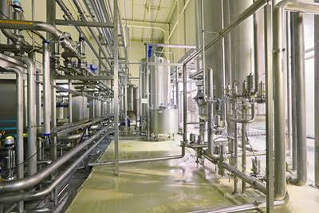
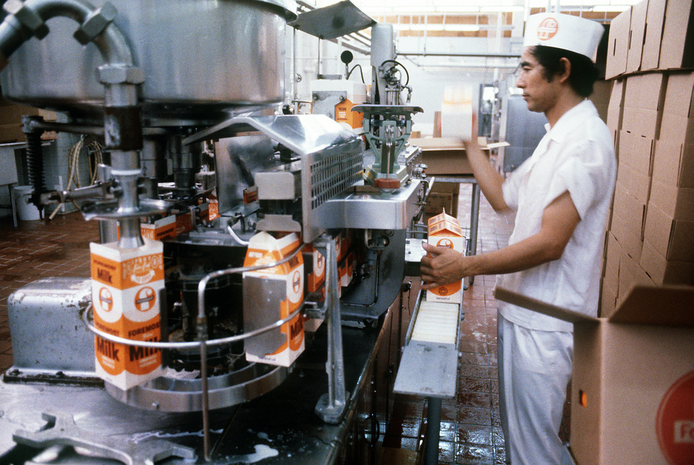
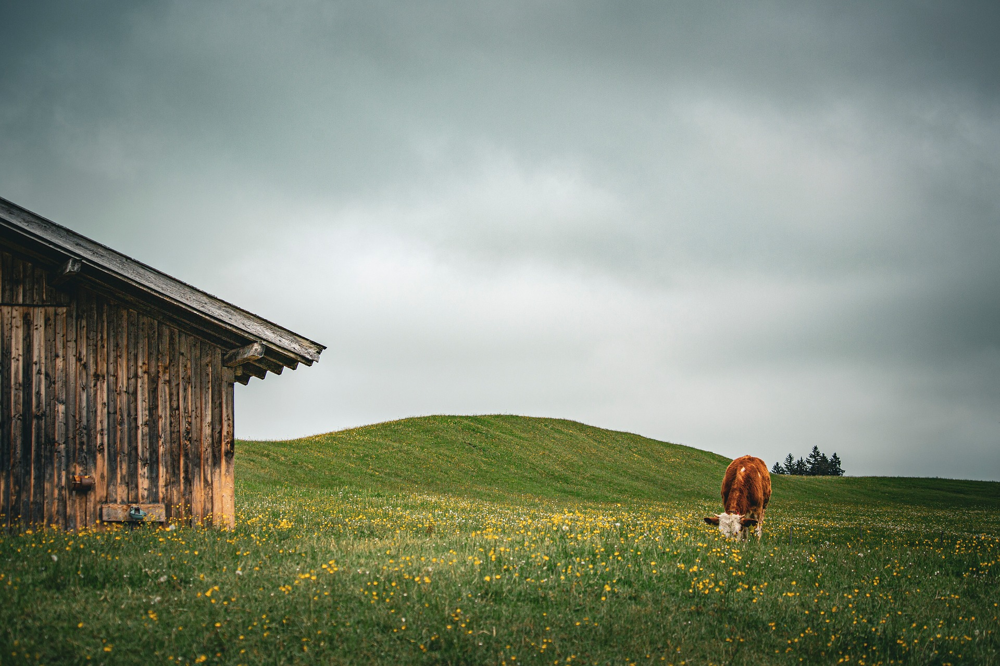

How Its Made
Milk Production
Milk is produced by dairy cows on farms. The cows are milked twice a day, and the milk is collected in refrigerated storage tanks. They use milking machines to collect the milk efficiently and hygienically. It is a simple process that makes sure that the milk is collected in a clean and safe manner. It is an essential step in the dairy production process.
Storage
Milk is stored within large refregerated tanks, where it is kept at a low temperature to preserve its freshness. and prevent it from spoiling. These tanks are cleaned regularly to maintain hygiene and quality within the milk. These tanks also are able to be transported easily, being able to take different factories for future processing.

Processing
Milk is processed in dairy factories where it is pasteurized to kill harmful bacteria and homogenized to create a uniform texture. This process ensures the milk is safe for consumption and has a consistent quality. it is then used to make various dairy products, such as cheese, butter, and yogurt. Cheese is made by coagulating the milk protein and pressing the resulting curds together. butter is made by churning the cream from the milk. and yogurt is made by fermenting the milk with bacterial cultures. All of these products are made through careful and controlled processes to ensure their quality and safety, as well as keeping them fresh for longer periods.


Transportation and Distribution
Milk and its products are transported from the dairy factories to various distribution centers and retail outlets in refrigerated trucks to maintain their freshness and quality. The transportation process is carefully managed to ensure that the milk reaches its destination quickly and safely. Once delivered, the milk is stored in refrigerated facilities until it is sold to consumers.